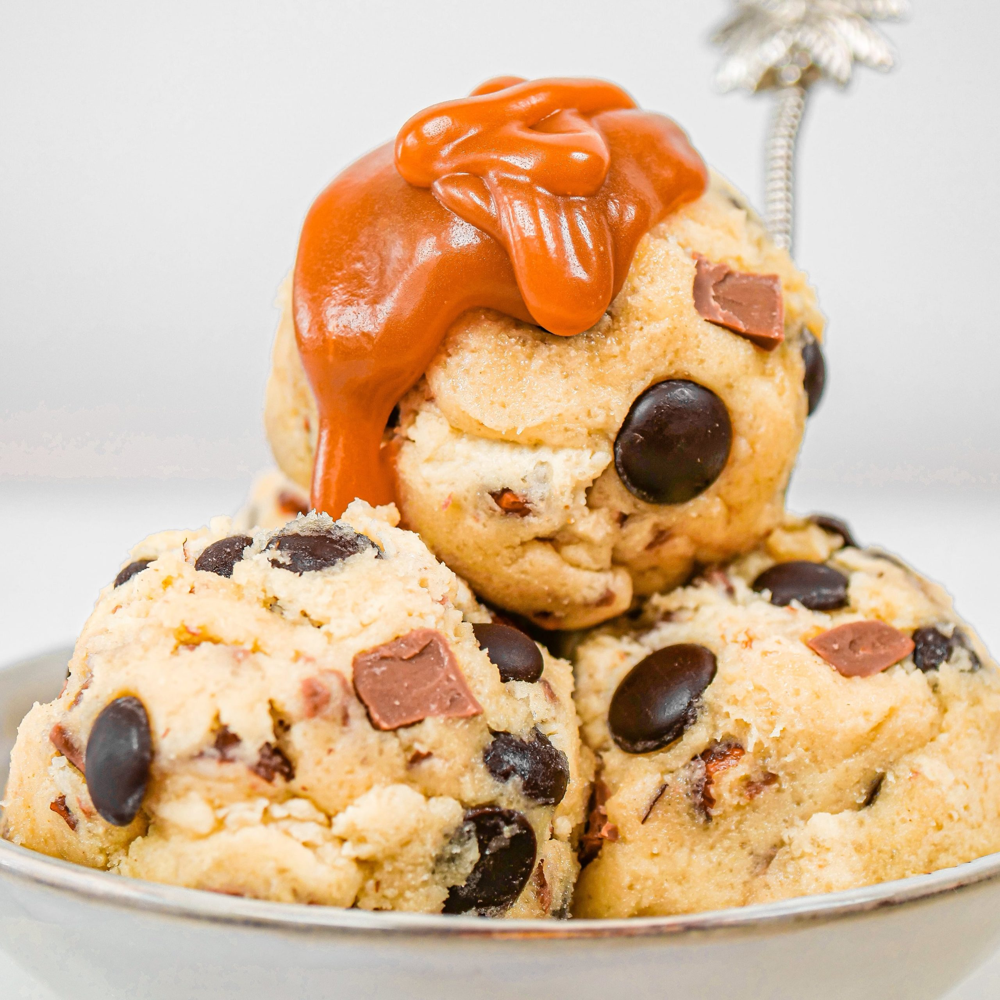

Recipes
Preparation
In a large bowl, whisk together the sugars, salt, and butter until a paste forms with no lumps. Whisk in the egg and vanilla, beating until light ribbons fall off the whisk and remain for a short while before falling back into the mixture. Sift in the flour and baking soda, then fold the mixture with a spatula (Be careful not to overmix, which would cause the gluten in the flour to toughen resulting in cakier cookies). Fold in the chocolate chunks, then chill the dough for at least 30 minutes. For a more intense toffee-like flavor and deeper color, chill the dough overnight. The longer the dough rests, the more complex its flavor will be. Preheat oven to 350°F (180°C). Line a baking sheet with parchment paper. Scoop the dough with an ice-cream scoop onto a parchment paper-lined baking sheet, leaving at least 4 inches (10 cm) of space between cookies and 2 inches (5 cm) of space from the edges of the pan so that the cookies can spread evenly. Bake for 12-15 minutes, or until the edges have started to barely brown. Cool completely before serving. Enjoy!

Preparation
Step 1 : In a bowl, mix ground beef, egg, onion, bread crumbs, Worcestershire, garlic, 1/2 teaspoon salt, and 1/4 teaspoon pepper until well blended. Divide mixture into four equal portions and shape each into a patty about 4 inches wide.
Step 2 : Lay burgers on an oiled barbecue grill over a solid bed of hot coals or high heat on a gas grill (you can hold your hand at grill level only 2 to 3 seconds); close lid on gas grill. Cook burgers, turning once, until browned on both sides and no longer pink inside (cut to test), 7 to 8 minutes total. Remove from grill.
Step 3: Lay buns, cut side down, on grill and cook until lightly toasted, 30 seconds to 1 minute.
Step 4 : Spread mayonnaise and ketchup on bun bottoms. Add lettuce, tomato, burger, onion, and salt and pepper to taste. Set bun tops in place